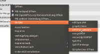
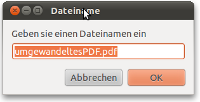
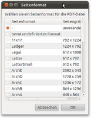
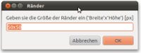
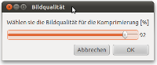

PDF-Konvertierung
Dieser Artikel wurde für die folgenden Ubuntu-Versionen getestet:
Dieser Artikel ist größtenteils für alle Ubuntu-Versionen gültig.
Zum Verständnis dieses Artikels sind folgende Seiten hilfreich:
 Es gibt im Dateimanager Nautilus keine Möglichkeit, Bilder direkt in eine PDF-Datei zu konvertieren oder mehrere PDF-Dateien zu vereinen. Das folgende in Nautilus integrierbare Skript ermöglicht diese Funktionen.
Es gibt im Dateimanager Nautilus keine Möglichkeit, Bilder direkt in eine PDF-Datei zu konvertieren oder mehrere PDF-Dateien zu vereinen. Das folgende in Nautilus integrierbare Skript ermöglicht diese Funktionen.
Bei dieser Methode handelt es sich um reine Bildverarbeitung. Das PDF-Format beherrscht als Vektorgrafikformat jedoch auch das Einfügen von ausgerichteten und skalierten Bildern in originaler Grafikqualität (und -auflösung). Solche PDF-Dateien können mit diesem Skript nicht erzeugt werden. Weitere Informationen zur Erzeugung solcher PDF-Dateien befinden sich z.B. in den Artikeln CUPS-PDF und GNOME-Photo-Printer.
Voraussetzungen¶
Diese Pakete sollten bei einer Standard-Installation [1] bereits vorhanden sein:
zenity
imagemagick
coreutils
 mit apturl
mit apturl
Paketliste zum Kopieren:
sudo apt-get install zenity imagemagick coreutils
sudo aptitude install zenity imagemagick coreutils
Installation¶
Die Installation von Skripten für Nautilus ist im Artikel Nautilus/Skripte beschrieben. Das Skript steht in deutscher und englischer Sprache zur Verfügung:


Hinweis!
Fremdsoftware kann das System gefährden.
Verwendung¶
Ist das Skript in Nautilus installiert, können beliebige Bild- und PDF-Dateien ausgewählt und das Skript über das Kontextmenü  gestartet werden. Es erscheint ein Textfenster zur Eingabe des Namen für die neue PDF-Datei. Anschließend ist noch die Auswahl eines Seitenformates für die PDF-Datei möglich. Neben den Standardformaten kann für die Bilder (und PDF-Dateien) auch in ein benutzerdefiniertes Format oder keine Größenanpassung festgelegt werden.
gestartet werden. Es erscheint ein Textfenster zur Eingabe des Namen für die neue PDF-Datei. Anschließend ist noch die Auswahl eines Seitenformates für die PDF-Datei möglich. Neben den Standardformaten kann für die Bilder (und PDF-Dateien) auch in ein benutzerdefiniertes Format oder keine Größenanpassung festgelegt werden.
Wird ein Standardseitenformat ausgewählt, muss noch zwischen Hoch- und Querformat entschieden werden. Im nächsten Eingabefenster können Seitenränder definiert werden. Als abschließende Auswahl ist es möglich, die Qualität bei komprimierten Bildformaten einzustellen.
So läuft die Konvertierung ab:
|  |
| 1. Dateien auswählen |
|  |
| 2. PDF-Dateinamen eingeben |
|  |
| 3. Seitenformat auswählen |
|  |
| 4. Ränder definieren |
|  |
| 5. Qualität einstellen |
 Übersichtsartikel
Übersichtsartikel- Erstellt mit Inyoka
-
 2004 – 2017 ubuntuusers.de • Einige Rechte vorbehalten
2004 – 2017 ubuntuusers.de • Einige Rechte vorbehalten
Lizenz • Kontakt • Datenschutz • Impressum • Serverstatus -
Serverhousing gespendet von